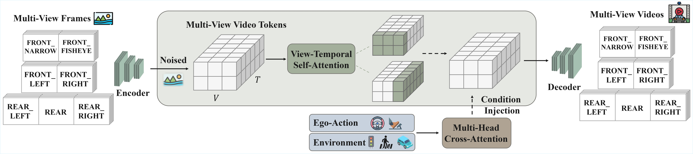
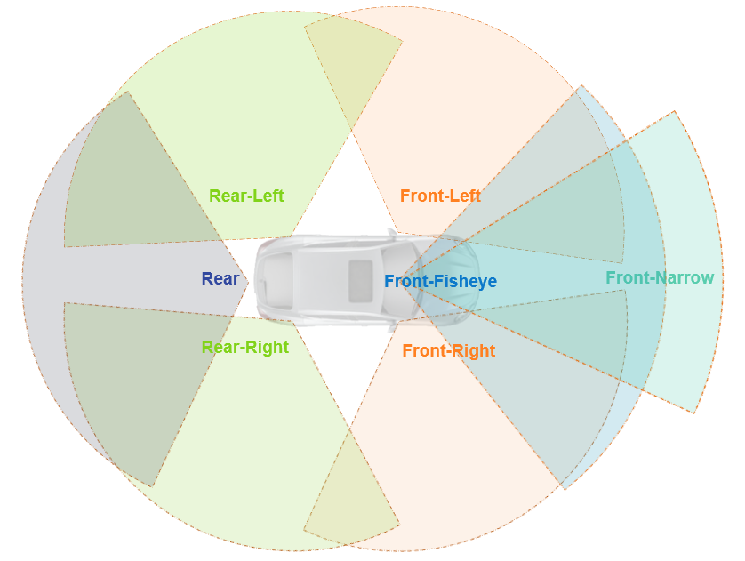
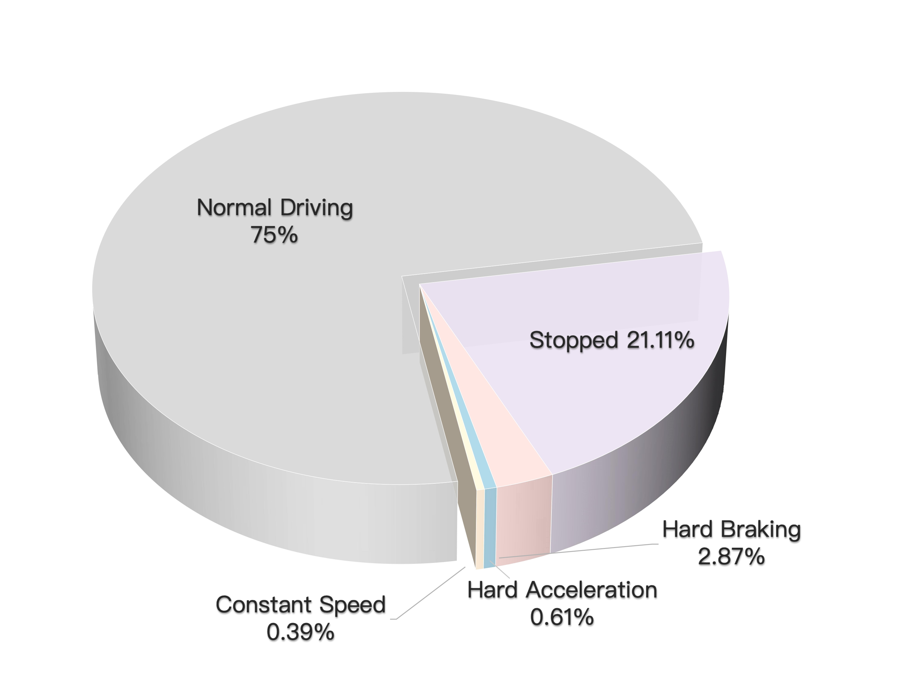

XPeng GWM Team
We propose X-World, a generative world model formulated as an action-conditioned multi-camera video generation model. Given a short history of synchronized multi-view camera streams, the model predicts the future camera observations that would result from executing a specified future action sequence.

The video data is recorded at a rate of 12 frames per second (FPS). Each frame provides a comprehensive 360-degree surround-view through seven distinct, calibrated camera perspectives.


X-World generates future multi-camera video streams that faithfully follow the commanded actions, while maintaining strong cross-view geometric consistency.
X-World supports optional controls over dynamic traffic agents and static road elements, enabling reproducible and editable scene rollouts.
X-World achieves stable temporal dynamics over long rollouts, demonstrating strong temporal coherence in extended simulation.
X-World enables world style transfer by conditioning on appearance prompts while preserving the underlying action and scene dynamics. Supported controls include weather conditions (e.g., rain, snow), time of day (e.g., day/night), and geographic region (e.g., China, Germany), enabling scalable scenario diversity without re-collecting real data.